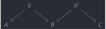
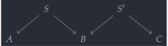

open import Cat.Instances.Functor open import Cat.Instances.Product open import Cat.Diagram.Pullback open import Cat.Bi.Base open import Cat.Prelude import Cat.Reasoning module Cat.Bi.Instances.Spans {o ℓ} (C : Precategory o ℓ) where
The bicategory of spans🔗
Let be a precategory. By a span in (from an object to an object ), we mean a diagram of the form . Note that the “vertex” of this span, the object , is part of the data, so that the collection of “spans in ” will not be a set (unless is strict) — so we can not construct a category where is the collection of spans from to .
However, we can make spans in the objects of a category, and the hom-sets are the maps in between the vertices which “commute with the legs”. Diagramatically, a map between spans is the dashed line in
where both the left and right triangles must commute.
record Span (a b : Ob) : Type (o ⊔ ℓ) where constructor span field apex : Ob left : Hom apex a right : Hom apex b open Span record Span-hom {a b : Ob} (x y : Span a b) : Type ℓ where no-eta-equality constructor span-hom field map : Hom (x .apex) (y .apex) left : x .left ≡ y .left ∘ map right : x .right ≡ y .right ∘ map
The category of spans between and admits a faithful functor to (projecting the vertex and the “middle map”, respectively), so that equality of maps of spans can be compared at the level of maps in .
Spans : Ob → Ob → Precategory _ _ Spans x y .Precategory.Ob = Span x y Spans x y .Precategory.Hom = Span-hom Spans x y .Precategory.Hom-set _ _ = is-hlevel≃ 2 (Iso→Equiv eqv e⁻¹) (hlevel 2) Spans x y .Precategory.id = span-hom id (intror refl) (intror refl) Spans x y .Precategory._∘_ f g = span-hom (f .map ∘ g .map) (g .left ∙ pushl (f .left)) (g .right ∙ pushl (f .right)) Spans x y .Precategory.idr f = Span-hom-path (idr _) Spans x y .Precategory.idl f = Span-hom-path (idl _) Spans x y .Precategory.assoc f g h = Span-hom-path (assoc _ _ _)
Now suppose that admits pullbacks for arbitrary pairs of maps. Supposing that we have some spans and , we can fit them in an M-shaped diagram like
 

so that taking the pullback of the diagram gives us an universal solution to the problem of finding a span . Since pullbacks are universal, this composition operation is functorial, and so extends to a composition operation Span-∘:
module _ (pb : ∀ {a b c} (f : Hom a b) (g : Hom c b) → Pullback C f g) where open Functor Span-∘ : ∀ {a b c} → Functor (Spans b c ×ᶜ Spans a b) (Spans a c) Span-∘ .F₀ (sp1 , sp2) = span pb.apex (sp2 .left ∘ pb.p₂) (sp1 .right ∘ pb.p₁) where module pb = Pullback (pb (sp1 .left) (sp2 .right)) Span-∘ .F₁ {x1 , x2} {y1 , y2} (f , g) = res where module x = Pullback (pb (x1 .left) (x2 .right)) module y = Pullback (pb (y1 .left) (y2 .right)) x→y : Hom x.apex y.apex x→y = y.limiting {p₁' = f .map ∘ x.p₁} {p₂' = g .map ∘ x.p₂} p where abstract open Pullback p : y1 .left ∘ f .map ∘ x.p₁ ≡ y2 .right ∘ g .map ∘ x.p₂ p = pulll (sym (f .left)) ∙ x.square ∙ pushl (g .right) res : Span-hom _ _ res .map = x→y res .left = sym (pullr y.p₂∘limiting ∙ pulll (sym (g .left))) res .right = sym (pullr y.p₁∘limiting ∙ pulll (sym (f .right))) Span-∘ .F-id {x1 , x2} = Span-hom-path $ sym $ x.unique id-comm id-comm where module x = Pullback (pb (x1 .left) (x2 .right)) Span-∘ .F-∘ {x1 , x2} {y1 , y2} {z1 , z2} f g = Span-hom-path $ sym $ z.unique (pulll z.p₁∘limiting ∙ pullr y.p₁∘limiting ∙ assoc _ _ _) (pulll z.p₂∘limiting ∙ pullr y.p₂∘limiting ∙ assoc _ _ _) where module x = Pullback (pb (x1 .left) (x2 .right)) module y = Pullback (pb (y1 .left) (y2 .right)) module z = Pullback (pb (z1 .left) (z2 .right))
What we’ll show in the rest of this module is that Span-∘ lets us make Spans into the categories of 1-cells of a prebicategory, the (pre)bicategory of spans (of ) . As mentioned before, this prebicategory has (a priori) no upper bound on the h-levels of its 1-cells, so it is not locally strict. We remark that when is univalent, then is locally so, and when is gaunt, then is strict.
Since the details of the full construction are grueling, we will present only an overview of the unitors and the associator. For the left unitor, observe that the composition is implemented by a pullback diagram like

but observe that the maps and also form a cone over the cospan , so that there is a unique map filling the dashed line in the diagram above such that everything commutes: hence there is an invertible 2-cell . The right unitor is analogous.
open Prebicategory open Pullback private _¤_ : ∀ {a b c} (x : Span b c) (y : Span a b) → Span a c f ¤ g = Span-∘ .F₀ (f , g) sλ← : ∀ {A B} (x : Span A B) → Span-hom x (span _ C.id C.id ¤ x) sλ← x .map = pb _ _ .limiting id-comm-sym sλ← x .left = sym $ pullr (pb _ _ .p₂∘limiting) ∙ idr _ sλ← x .right = sym $ pullr (pb _ _ .p₁∘limiting) ∙ idl _ sρ← : ∀ {A B} (x : Span A B) → Span-hom x (x ¤ span _ C.id C.id) sρ← x .map = pb _ _ .limiting id-comm sρ← x .left = sym $ pullr (pb _ _ .p₂∘limiting) ∙ idl _ sρ← x .right = sym $ pullr (pb _ _ .p₁∘limiting) ∙ idr _
For the associator, while doing the construction in elementary terms is quite complicated, we observe that, diagramatically, the composite of three morphisms fits into a diagram like
so that, at a high level, there is no confusion as to which composite is meant. From then, it’s just a matter of proving pullbacks are associative (in a standard, but annoying, way), and showing that these canonically-obtained isomorphisms (are natural in all the possible variables and) satisfy the triangle and pentagon identities.
On second thought, let’s not read that. T’is a silly theorem.
sα← : ∀ {A B C D} ((f , g , h) : Span C D × Span B C × Span A B) → Span-hom ((f ¤ g) ¤ h) (f ¤ (g ¤ h)) sα← (f , g , h) .map = pb _ _ .limiting resp′ where abstract resp : g .left C.∘ pb (f .left) (g .right) .p₂ C.∘ pb ((f ¤ g) .left) (h .right) .p₁ ≡ h .right C.∘ pb ((f ¤ g) .left) (h .right) .p₂ resp = assoc _ _ _ ∙ pb _ _ .square shuffle = pb _ _ .limiting {p₁' = pb _ _ .p₂ C.∘ pb _ _ .p₁} {p₂' = pb _ _ .p₂} resp abstract resp′ : f .left C.∘ pb (f .left) (g .right) .p₁ C.∘ pb ((f ¤ g) .left) (h .right) .p₁ ≡ (g ¤ h) .right C.∘ shuffle resp′ = sym $ pullr (pb _ _ .p₁∘limiting) ∙ extendl (sym (pb _ _ .square)) sα← (f , g , h) .left = sym $ pullr (pb _ _ .p₂∘limiting) ∙ pullr (pb _ _ .p₂∘limiting) sα← (f , g , h) .right = sym $ pullr (pb _ _ .p₁∘limiting) ∙ assoc _ _ _ sα→ : ∀ {A B C D} ((f , g , h) : Span C D × Span B C × Span A B) → Span-hom (f ¤ (g ¤ h)) ((f ¤ g) ¤ h) sα→ (f , g , h) .map = pb _ _ .limiting resp′ where abstract resp : f .left C.∘ pb (f .left) ((g ¤ h) .right) .p₁ ≡ g .right C.∘ pb (g .left) (h .right) .p₁ C.∘ pb (f .left) ((g ¤ h) .right) .p₂ resp = pb _ _ .square ∙ sym (assoc _ _ _) shuffle = pb _ _ .limiting {p₁' = pb _ _ .p₁} {p₂' = pb _ _ .p₁ C.∘ pb _ _ .p₂} resp abstract resp′ : (f ¤ g) .left C.∘ shuffle ≡ h .right C.∘ pb (g .left) (h .right) .p₂ C.∘ pb (f .left) ((g ¤ h) .right) .p₂ resp′ = pullr (pb _ _ .p₂∘limiting) ∙ extendl (pb _ _ .square) sα→ (f , g , h) .left = sym $ pullr (pb _ _ .p₂∘limiting) ∙ assoc _ _ _ sα→ (f , g , h) .right = sym $ pullr (pb _ _ .p₁∘limiting) ∙ pullr (pb _ _ .p₁∘limiting) Spanᵇ : Prebicategory _ _ _ Spanᵇ .Ob = C.Ob Spanᵇ .Hom = Spans Spanᵇ .id = span _ C.id C.id Spanᵇ .compose = Span-∘ Spanᵇ .unitor-l = make-natural-iso sλ← (λ x → record { inv = span-hom (pb _ _ .p₂) refl (pb _ _ .square) ; inverses = record { invl = Span-hom-path (Pullback.unique₂ (pb _ _) {p = idl _ ∙ ap₂ C._∘_ refl (introl refl)} (pulll (pb _ _ .p₁∘limiting)) (pulll (pb _ _ .p₂∘limiting)) (id-comm ∙ pb _ _ .square) id-comm) ; invr = Span-hom-path (pb _ _ .p₂∘limiting) } }) λ x y f → Span-hom-path $ Pullback.unique₂ (pb _ _) {p = idl _ ∙ f .right} (pulll (pb _ _ .p₁∘limiting) ∙ pullr (pb _ _ .p₁∘limiting) ∙ idl _) (pulll (pb _ _ .p₂∘limiting) ∙ pullr (pb _ _ .p₂∘limiting) ∙ idr _) (pulll (pb _ _ .p₁∘limiting) ∙ sym (f .right)) (pulll (pb _ _ .p₂∘limiting) ∙ idl _) Spanᵇ .unitor-r = make-natural-iso sρ← (λ x → record { inv = span-hom (pb _ _ .p₁) (sym (pb _ _ .square)) refl ; inverses = record { invl = Span-hom-path (Pullback.unique₂ (pb _ _) {p = introl refl} (pulll (pb _ _ .p₁∘limiting) ∙ idl _) (pulll (pb _ _ .p₂∘limiting)) (idr _) (id-comm ∙ sym (pb _ _ .square))) ; invr = Span-hom-path (pb _ _ .p₁∘limiting) } }) λ x y f → Span-hom-path $ Pullback.unique₂ (pb _ _) {p = sym (f .left) ∙ introl refl} (pulll (pb _ _ .p₁∘limiting) ∙ pullr (pb _ _ .p₁∘limiting) ∙ idr _) (pulll (pb _ _ .p₂∘limiting) ∙ pullr (pb _ _ .p₂∘limiting) ∙ idl _) (pulll (pb _ _ .p₁∘limiting) ∙ idl _) (pulll (pb _ _ .p₂∘limiting) ∙ sym (f .left)) Spanᵇ .associator = make-natural-iso sα← (λ x → record { inv = sα→ x ; inverses = record { invl = Span-hom-path $ Pullback.unique₂ (pb _ _) {p = pb _ _ .square} (pulll (pb _ _ .p₁∘limiting) ∙ pullr (pb _ _ .p₁∘limiting) ∙ pb _ _ .p₁∘limiting) (pulll (pb _ _ .p₂∘limiting) ∙ unique₂ (pb _ _) {p = extendl (pb _ _ .square)} (pulll (pb _ _ .p₁∘limiting) ∙ pullr (pb _ _ .p₁∘limiting) ∙ pb _ _ .p₂∘limiting) (pulll (pb _ _ .p₂∘limiting) ∙ pb _ _ .p₂∘limiting) refl refl) (idr _) (idr _) ; invr = Span-hom-path $ Pullback.unique₂ (pb _ _) {p = pb _ _ .square} (pulll (pb _ _ .p₁∘limiting) ∙ unique₂ (pb _ _) {p = extendl (pb _ _ .square)} (pulll (pb _ _ .p₁∘limiting) ∙ pb _ _ .p₁∘limiting) (pulll (pb _ _ .p₂∘limiting) ∙ pullr (pb _ _ .p₂∘limiting) ∙ pb _ _ .p₁∘limiting) refl refl) (pulll (pb _ _ .p₂∘limiting) ∙ pullr (pb _ _ .p₂∘limiting) ∙ pb _ _ .p₂∘limiting) (idr _) (idr _) } }) λ x y f → Span-hom-path $ Pullback.unique₂ (pb _ _) {p₁' = f .fst .map C.∘ pb _ _ .p₁ C.∘ pb _ _ .p₁} {p₂' = pb _ _ .limiting {p₁' = f .snd .fst .map C.∘ pb _ _ .p₂ C.∘ pb _ _ .p₁} {p₂' = f .snd .snd .map C.∘ pb _ _ .p₂} (pulll (sym (f .snd .fst .left)) ∙ assoc _ _ _ ∙ pb _ _ .square ∙ pushl (f .snd .snd .right))} {p = sym $ pullr (pb _ _ .p₁∘limiting) ∙ pulll (sym (f .snd .fst .right)) ∙ extendl (sym (pb _ _ .square)) ∙ pushl (f .fst .left)} (pulll (pb _ _ .p₁∘limiting) ∙ pullr (pb _ _ .p₁∘limiting)) (pulll (pb _ _ .p₂∘limiting) ∙ pb _ _ .unique (pulll (extendl (pb _ _ .p₁∘limiting)) ∙ pullr (pullr (pb _ _ .p₂∘limiting)) ∙ ap₂ C._∘_ refl (pb _ _ .p₁∘limiting)) (pulll (extendl (pb _ _ .p₂∘limiting)) ∙ pullr (pullr (pb _ _ .p₂∘limiting)) ∙ ap₂ C._∘_ refl (pb _ _ .p₂∘limiting))) (pulll (pb _ _ .p₁∘limiting) ∙ pullr (pb _ _ .p₁∘limiting) ∙ pulll (pb _ _ .p₁∘limiting) ∙ sym (assoc _ _ _)) (pulll (pb _ _ .p₂∘limiting) ∙ pb _ _ .unique (pulll (pb _ _ .p₁∘limiting) ∙ pullr (pb _ _ .p₁∘limiting) ∙ extendl (pb _ _ .p₂∘limiting)) (pulll (pb _ _ .p₂∘limiting) ∙ pb _ _ .p₂∘limiting)) Spanᵇ .triangle f g = Span-hom-path $ pb _ _ .unique (pulll (pb _ _ .p₁∘limiting) ∙ pullr (pb _ _ .p₁∘limiting) ∙ pb _ _ .p₁∘limiting ∙ introl refl) (pulll (pb _ _ .p₂∘limiting) ∙ pullr (pb _ _ .p₂∘limiting) ∙ eliml refl) Spanᵇ .pentagon f g h i = Span-hom-path $ Pullback.unique₂ (pb _ _) {p = pullr (pulll (pb _ _ .p₂∘limiting) ∙ pullr (pulll (pb _ _ .p₂∘limiting) ∙ pullr (pb _ _ .p₂∘limiting)) ∙ ap₂ C._∘_ refl (pulll (pb _ _ .p₁∘limiting))) ∙ ap₂ C._∘_ refl (extendl (pb _ _ .p₂∘limiting)) ∙ sym (ap₂ C._∘_ refl (idl _ ∙ extendl (pb _ _ .p₂∘limiting)) ∙ extendl (sym (pb _ _ .square)))} (pulll (pb _ _ .p₁∘limiting) ∙ pullr (pulll (pb _ _ .p₁∘limiting))) (pulll (pb _ _ .p₂∘limiting) ∙ pullr (pulll (pb _ _ .p₂∘limiting) ∙ pullr (pb _ _ .p₂∘limiting))) (pulll (pb _ _ .p₁∘limiting) ∙ Pullback.unique₂ (pb _ _) {p = pullr (pb _ _ .p₂∘limiting) ∙ extendl (pb _ _ .square) ∙ sym (assoc _ _ _)} (pulll (pb _ _ .p₁∘limiting) ∙ pb _ _ .p₁∘limiting) (pulll (pb _ _ .p₂∘limiting) ∙ pullr (pb _ _ .p₂∘limiting)) (pulll (pb _ _ .p₁∘limiting) ∙ pb _ _ .unique (pulll (pb _ _ .p₁∘limiting) ∙ pulll (pb _ _ .p₁∘limiting) ∙ pb _ _ .p₁∘limiting ∙ idl _) (pulll (pb _ _ .p₂∘limiting) ∙ pulll (pullr (pb _ _ .p₂∘limiting)) ∙ pullr (pullr (pb _ _ .p₂∘limiting) ∙ pulll (pb _ _ .p₁∘limiting)) ∙ pulll (pb _ _ .p₁∘limiting))) (pulll (pb _ _ .p₂∘limiting) ∙ pullr (pulll (pb _ _ .p₂∘limiting) ∙ pullr (pb _ _ .p₂∘limiting)) ∙ ap₂ C._∘_ refl (pulll (pb _ _ .p₁∘limiting)) ∙ pulll (pb _ _ .p₂∘limiting) ∙ sym (assoc _ _ _))) ( pulll (pb _ _ .p₂∘limiting) ·· pullr (pb _ _ .p₂∘limiting) ·· sym (idl _ ·· pulll (pb _ _ .p₂∘limiting) ·· sym (assoc _ _ _)))